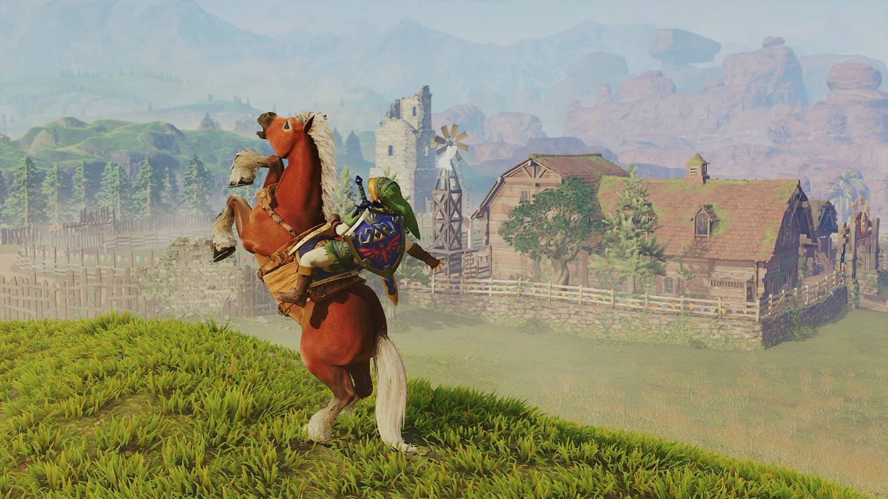

Gaming · 07 Nov 2026
Where to get Epona in Ocarina of Time

Epona is your horse in Ocarina of Time, but they're only available after you get a bit older. Here's where you can find Epona, and how to unlock her.
Multiple independent publishers are reporting on the same development: Where to get Epona in Ocarina of Time.
The available reports place the development in the Gaming category. The accounts were compared for agreement on the central event rather than simply shared names or broad topics.
One of the available reports describes the development this way: Epona is your horse in Ocarina of Time, but they're only available after you get a bit older. Here's where you can find Epona, and how to unlock her.
Readers should consult the linked source reports for additional context, updates and details that may change as the story develops.
Sources
This article was produced by the C. O. Eric AI Newsroom from the cited sources. It is published only after automated evidence and safety checks.